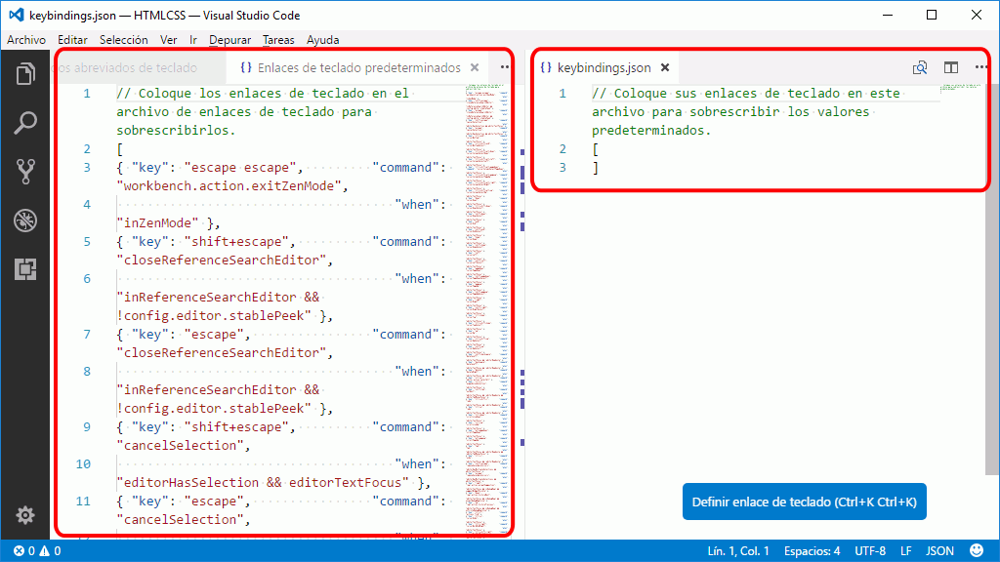

Atajo: Abrir páginas en el navegador
Para definir un atajo de teclado que permita abrir fácilmente en un navegador web la página web que estemos editando en Visual Studio Code es necesario primero crear la tarea..
Crear un atajo
Las capturas siguientes muestran como crear una tarea (más exactamente, se crean dos tareas simultáneamente), para poder abrir las páginas web en Firefox y en Chrome.
- Elija la opción de menú .

- Se mostrará en una pestaña el archivo de atajos de teclado predeterminados de Visual Studio Code. Haga clic en keybindings.json:
- Se mostrará en otra pestaña el archivo de atajos de teclado personalizados:

Al crearse, este fichero no contiene ninguna definición:
// Coloque sus enlaces de teclado en este archivo para sobrescribir los valores predeterminados. [ ]- Modifique el contenido del archivo keybindings.json con los atajos de teclado deseados:

Estas son los atajos que permiten ejecutar las tareas aconsejadas en la lección Tareas de Visual Studio Code que abren ficheros en Firefox y Chrome. Los atajos asociados son
- Ctrl+Alt+f, para Abrir en Firefox
- Ctrl+Alt+c, para Abrir en Chrome
// Atajos de teclado aconsejados para el curso Páginas web HTML y hojas de estilo CSS de www.mclibre.org [ { "key": "ctrl+alt+f", "command": "workbench.action.tasks.runTask", "args": "Abrir en Firefox" }, { "key": "ctrl+alt+c", "command": "workbench.action.tasks.runTask", "args": "Abrir en Chrome" } ]El archivo keybindings.json se crea en la carpeta C:\Users\Usuario\AppData\Roaming\Code\User.
Utilizar un atajo de teclado
Para utilizar alguno de los atajos de teclado personalizados, siga los pasos siguientes:
- Abra en una pestaña la página web que quiera abrir en un navegador:

- Pulse el atajo de teclado. Por ejemplo Ctrl+Alt+f.
- Se abrirá en el navegador elegido la página abierta:

- Modifique el contenido del archivo keybindings.json con los atajos de teclado deseados: